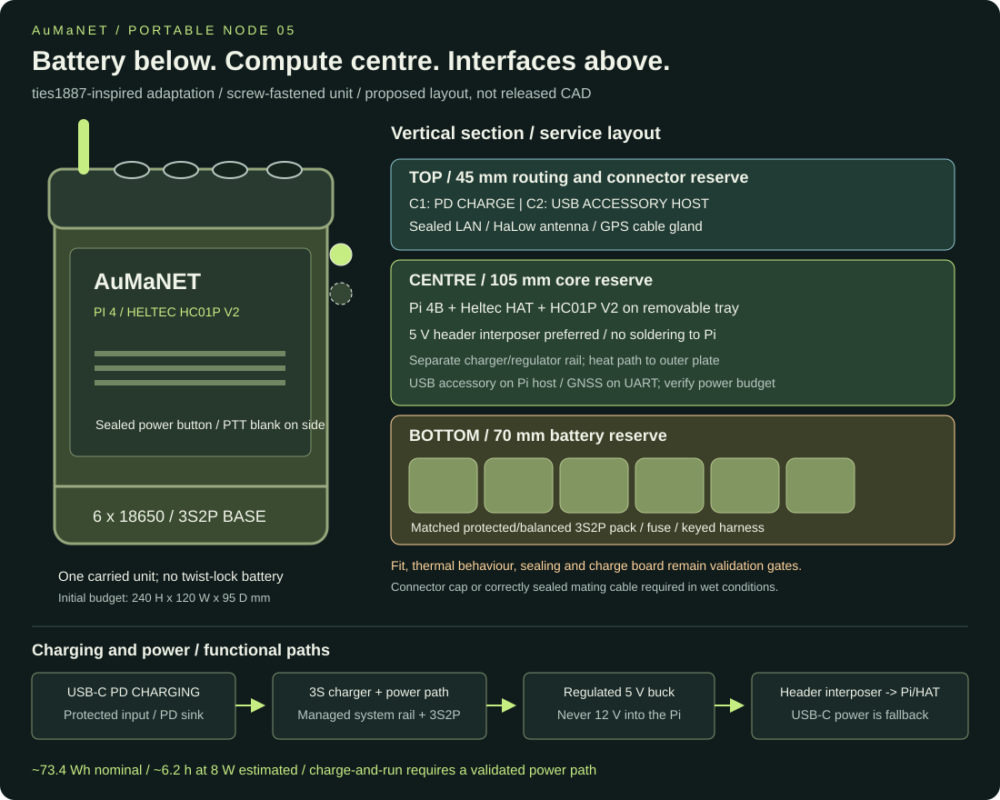
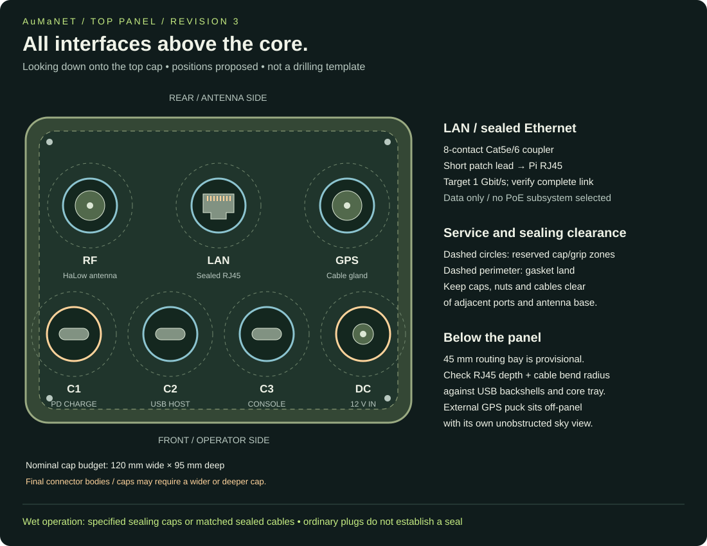

DESIGN PROTOTYPE · Some parts and assembly steps remain unverified
Start here · Current baseline · Build readiness
Portable Pi 4 radio: modular body and sealed top interfaces
Plan revision 5, 2026-11-05. User-selected: Pi 4B, Heltec HAT/HC01P V2, six 18650 cells. Packaging proposal; no modified CAD or assembly has been validated.

Enclosure direction
Use ties1887/Mesh-radio-Halow-LoRa, superseding OpenNot5. One carried unit has a bottom battery base, central compute/radio core, and top connector/routing cap. A single centre/base body with an internal partition is acceptable. Use screws/inserts and gasketed service joints. Battery twist locking, magnetic contacts and hot swapping are unnecessary.
Reference commit: f0d285c67bc893ddacc5d8121fe1c92385cd54fb. The V2 SolidWorks screenshot was inspected; the plan does not rely on its AI render. No upstream CAD is copied or modified in this update.
| Source | Use in our adaptation |
|---|---|
| P4-Wio | Primary core/cap reference. STEP files include enclosure_main_chassis.STEP, middel part.STEP, enclosure_top_cover.STEP and gaskets. Its different HAT/radio needs a new Heltec carrier. |
| Standalone battery base | Battery_Case_Main.STEP and Battery_Case_Bottom_Cover.STEP provide shape references. Resize for our 3S2P pack and replace the locking joint with a fixed serviceable joint. No assumption about upstream cell count or circuitry. |
| First-generation V2 | Style reference; step/middel part.STEP, batcase.STEP and top.STEP are alternatives to inspect. Mating parts across generations are not assumed interchangeable. |
Source licence: CC BY-NC-SA 4.0. Retain ties1887 attribution and revision; shared derivative CAD follows its licence separately from original AuMaNET documentation. This enclosure selection adds no LoRa subsystem.
Three vertical zones
Initial design budget: 240 mm tall x 120 mm wide x 95 mm deep, about 230 x 110 x 85 mm inside. These are original reserves, not upstream measurements or released print dimensions.
| Bottom to top | Reserved height | Contents |
|---|---|---|
| Battery base | 70 mm | Protected 3S2P six-cell pack, BMS, fuse and keyed internal connector. Reserve approximately 75 x 65 x 45 mm for a compact pack, subject to supplier drawing. |
| Central core | 105 mm | Pi 4B + Heltec HAT + HC01P V2 on removable tray, oriented along body. Reserve 100 x 75 x 50 mm for electronics, then check every connector and standoff. |
| Top routing/interface cap | 45 mm | Connector backs, USB harnesses, RF pigtail, strain relief. Start with 30 mm behind connector panel; actual drawing and bend radius decide final depth. |
| Partition/joint allowance | 10 mm | Insulating divider, gasket and service clearances. |
Put charging electronics and the 5 V buck on a separate isolated service rail with a heat path, away from cells and connector backs. Charger board dimensions remain open and may enlarge the shell. Measure the Pi/HAT/radio stack, bulkhead nuts, internal cable bends and mating geometry before releasing CAD. Heltec's 90 x 50 x 20 mm HAT product characteristics are not a validated assembly drawing.
Use an external heat-spreader coupled to the Pi CPU and a thermal barrier at the battery base. Preserve a polymer RF path for local Wi-Fi. No screen is included. A gasket and printed shell do not establish an IP or military rating.
Top-down panel layout

Rear row: HaLow RF, sealed LAN and GPS gland. Front/operator row: USB-C charge and USB-C accessory host. The preferred GNSS antenna mounts off-panel so it does not cover connectors; its receiver is inside. The USB puck is a fallback with a different harness. Dashed circles reserve cap/grip clearance; the perimeter reserves the gasket land. Layout is a proposal, not a scaled cut-out drawing. The 120 x 95 mm cap and 45 mm routing depth may need enlargement for actual sealing collars, RJ45 backshells, cap tethers, wrench access and cable bend radii. Check all retained interfaces with every cable fitted before freezing the cap.
Top interface schedule
| Panel label | Role and internal route |
|---|---|
| CHARGE / USB-C PD IN | Sealed Type-C input -> PD sink -> 3S CC/CV charger with temperature supervision -> BMS-approved pack connection. Managed power path needed for running while charging. |
| ACCESSORY / USB-C HOST | Pi USB-A host -> compliant downstream Type-C interface with correct CC/current signalling and current protection -> sealed top USB-C. Initially USB 2.0 for digital headset, keyboard or other supported peripheral. |
| LAN / SEALED RJ45 | Eight-contact Cat5e/6 sealed panel coupler -> short flexible patch cable -> Pi 4 built-in RJ45. Target 1000BASE-T with all four pairs connected. Data only; no PoE power subsystem selected. |
| RF / HaLow | Sealed bulkhead -> short correct-connector pigtail -> radio. |
| GPS | Preferred: sealed antenna coax exit -> internal LC76G receiver -> HAT UART P2. Fallback: external USB receiver through an appropriate sealed cable exit. |
Preferred non-invasive Pi power: the F23J5V5A1S-C enclosed converter feeds the Pi’s internal USB-C inlet directly. A barrel mating adapter joins the battery output to its input wires. A GPIO power interposer is an optional alternative, not required for the first build. USB-C describes a connector, not a power/data role. Do not split one port across host/device/charging functions. Do not connect a PC host to ACCESSORY. A generic power-only bulkhead or passive adapter is not a verified downstream Type-C port: select a proper implementation and test C-to-C enumeration in both orientations.
Administration uses Wi-Fi or the sealed Ethernet port. No external USB service console is included.
Headsets must be digital USB Audio Class devices with playback/microphone drivers and voice-app routing validated on the pinned OpenWrt build. Passive analogue USB-C headsets are not sufficient. USB-connected GPS fallback, headsets and accessories share Pi 4's published 1.2 A total USB budget; a 5 A regulator does not increase it. Add a properly powered non-backfeeding hub only if necessary, updating space and power budgets.
Watertight top cap
Use a replaceable recessed top insert, splash shoulders, strain relief, enough space to grip caps, and distinct CHARGE/ACCESSORY/LAN labels. Cable interfaces are at the top; the power button and blanked PTT position are on the upper side; internal harnesses reach the Pi's existing side ports. Battery/core remain attached for normal use.
Bulgin 4000 C-Type Buccaneer is a reference family, not a selected SKU. Select receptacle, sealing cable, gasket and cap together. Require documented sealing capped when unused and mated using the specified cable. An ordinary USB-C lead does not automatically preserve the connector's mated rating; it may be dry-weather only. Chassis twist locking is omitted; connector coupling required for sealing can remain.
Panel holes, nut clearances, wall thickness and spacing follow selected connector drawings. Test the completed body and every used/capped port state before an ingress claim. Keep joints out of pooling areas. Retain sky visibility for the external GPS and clearance around the HaLow antenna.
Ethernet integration
Use a shielded eight-contact RJ45 coupler and matched sealing cable/cap system; Bulgin Standard Ethernet Buccaneer is a reference family, with final SKU and dimensions still open. Do not substitute single-pair Ethernet, a four-contact 100-Mbit part, or an unsealed RJ45 extension. Choose Cat5e or better for the complete internal/external harness. Preserve pair twist and shield strategy; retain the existing Pi magnetics rather than wiring directly to the PHY.
Sealing must be documented capped and with the specified mating cable. A bare standard RJ45 cable may work electrically but is not assumed sealed. PoE capability of a connector does not make the Pi a PoE input; no passive PoE or supply wiring is part of this build.
Initial use is local wired administration or a wired peer; default network role is trusted LAN. Connecting an internet router, another mesh gateway or a second Layer-2 path requires explicit routing/DHCP/loop review. Test negotiated 1 Gbit/s, sustained throughput, packet loss, reconnect and simultaneous HaLow traffic. Check all eight contacts and capped/mated ingress states.
Six-cell battery and regulator
Procure a professionally assembled 3S2P pack: three series groups of two parallel 18650 cells. With matched genuine 3.6 V nominal / 3.4 Ah cells, this is 10.8 V nominal, 12.6 V full, 6.8 Ah. Six cells in series is not this design.
Specify balancing BMS, temperature sensing/charge inhibit, insulated terminals, fuse, retention, keyed connector and at least 5 A continuous pack discharge capability, coordinated by the pack builder. Charge current starts at no more than 2 A, subject to cell/pack approval. No loose-cell spring-holder adaptation or extra cells connected to the three-cell Waveshare UPS holder is approved.
Current sourcing lead: the enclosed converter with captive USB-C output. Feed the Pi's internal USB-C power inlet from it. The open blue converter and Pololu part remain technical alternatives. Verify the input range down to the pack's usable lower voltage, loaded output at the Pi, and heat. The 5 A maximum is a seller rating. This is not the battery charger.
Runtime estimate
6 x 3.6 V x 3.4 Ah = 73.4 Wh nominal. At an assumed 85% conversion efficiency and leaving 20% reserve, about 49.9 Wh is available to the load:
| Load assumption including GPS/radio | Estimated operation with reserve |
|---|---|
| 6 W | 8.3 h |
| 8 W design assumption | 6.2 h |
| 10 W | 5.0 h |
These are calculations, not test results. Age, temperature, BMS cutoff and radio duty cycle affect runtime. Six cells still do not establish the 12 h target at 8 W: the same budget requires about 141 Wh nominal. Treat the internal pack as the portable baseline and retain an external supply option for all-day use. Runtime testing decides whether the earlier 12 h acceptance target needs a larger pack or a reduced load.
Non-invasive Pi power
Preferred route: protected pack or managed system rail -> matching barrel adapter and fused input harness -> enclosed 5 V converter -> captive USB-C lead -> Pi power inlet. No soldering to the Pi and no GPIO interposer are required. This internal supply is separate from the top accessory/data connector.
Header power remains possible through physical pins 2/4 and grounds, but is not the first-build route. Do not use both supplies together. Raw battery voltage never connects directly to Pi, 3.3 V or signal pins.
USB-C PD charging
The simplified panel has one USB-C PD charge input and one USB-C accessory host. The dedicated service console and 12 V barrel input are removed from the current baseline. The GPS cable gland remains for the previously selected external receiver.
Charging path: rated sealed USB-C input/cable -> PD sink + 3S Li-ion CC/CV charger -> BMS-protected pack. Use the charger's managed system rail to feed the 5 V regulator if load sharing is supported and validated. A PD trigger alone is not a battery charger. No direct USB-to-cell or raw battery-to-Pi connection is allowed.
Target a 15 V / 3 A PD source (45 W) with charge current capped by the actual pack, cable, connector and thermal limits. A source without the required profile must report no charge or a documented reduced-power mode. The USB-C receptacle itself neither negotiates voltage nor controls charging.
Charger PCB selection remains open. TI USB-PD-CHG-EVM-01 demonstrates a TPS25751/BQ25798 multi-cell charging approach; it is a development reference, not an approved enclosure-ready module. Select a documented 3S-configurable board, or design one, with temperature protection, input backfeed protection and mechanical drawings before fixing its mounting rail.
Desired behaviour is continued radio operation when charge power is inserted/removed. This requires managed load sharing, a system rail feeding the 5 V regulator, controlled battery charging and no backfeed. It remains a required validation gate. Until passed, use orderly shutdown and physical load isolation before charging. No arbitrary charger is approved for simultaneous use.
Vehicle charging needs an automotive-rated PD source supporting the selected profile, fused and transient protected. Verify charge/run power budget: available input power must cover both load and selected charge rate after losses.
Use graceful Linux shutdown before master disconnect. A later shutdown button must use a pin verified spare against the HAT schematic. A 3S monitor/fuel-gauge part and 3.3 V/OpenWrt integration remain open. Set warnings/shutdown above BMS cutoff from tests; Pi GPIO has no analogue input and cannot accept raw pack voltage.
GPS selection and location behaviour
Updated preference: evaluate the LC76G internal receiver with external antenna and HAT UART, as detailed in DIY selection. This supersedes the USB puck as the first candidate; UART, power and received-board compatibility remain bench gates. The top GPS gland can carry antenna coax.
Retain a GlobalSat BU-353N (10 Hz) USB GPS puck as the fallback procurement candidate, with exact product suffix verified. Manufacturer documentation describes USB-powered NMEA 0183, default 115200 baud, a magnetic puck and built-in antenna. Its manual gives a 53 mm diameter x 19.2 mm body, 1.5 m cable and 42 mA typical at 5 V. This is a GPS/SBAS product; do not substitute BU-353N5 or another variant while retaining these specifications.
Mount the puck outside the case with a sky view, using a cable gland/split gland sized for its cable and USB connector, or an appropriately rated sealed USB bulkhead. A metal case or roof between it and the sky will impair reception. Provide a removable top bracket for handheld use and a roof mount option for vehicles. The puck is the receiver and antenna together; a passive GPS antenna alone cannot replace it. Keep it separated from the HaLow antenna and verify reception while transmitting. Store excess cable without tight bends or pressure on the connector.
Connection: Pi USB 2 port -> USB serial device -> gpsd -> OpenMANET local receiver source. Exact USB bridge/driver support for this GlobalSat model on the pinned OpenWrt image must be bench verified; NMEA support alone is not proof. Upstream explicitly documents gpsd-compatible u-blox USB receivers, so a genuine u-blox USB unit is the fallback if the GlobalSat driver is unavailable. Record VID/PID and stable device mapping instead of assuming /dev/ttyUSB0 remains constant.
Validate cold boot, fix acquisition, disconnect/reconnect, fix loss, UTC and position age. Node GPS locates the radio, not a person who walks away from it. Phone/person location remains a separate source. GNSS position/time is not assumed to discipline the system clock until the clock service is configured and tested.
Before CAD release / deployment
- Inspect the pinned STEP assemblies and record exact measured mating surfaces, Heltec carrier fit, pack supplier dimensions and connector footprints. Print fit coupons before the body.
- Freeze the PD charger, host Type-C implementation and panel sealing family. Test both USB-C orientations and intended cable types.
- Bench-test Pi/HAT firmware, calibration, radio supply current, GPS driver and headset capture/playback with the chosen app.
- Check voltage at Pi during boot and peak TX with all USB loads. Test current limiting, no backfeed, failed PD negotiation, PD source insertion/removal and low battery.
- Validate pack temperature protection, charge termination, managed power path or fallback isolation, graceful shutdown and cutoff recovery.
- Verify GPS fix/age and distinguish radio position from phone/person position. Test thermal performance with closed lid and source-connected operation if enabled.
- Test vibration, mounting, harness pulls and water ingress in capped and correctly mated states. Re-run messaging and relay trials.
Primary references
- ties1887 source revision
- Heltec HAT and HC01P V2
- Pololu regulator
- TI USB-C charging reference
- Bulgin connector family
- Pi USB limits and roles
- GlobalSat receiver
- OpenMANET GNSS
Revision 5: field controls and voice provision
User approved a sealed power/shutdown button and visible battery/link indicators, plus provision for headset/PTT. Place the recessed sealed power button on the upper side shoulder, reachable while wearing gloves and protected from accidental pressure. Top placement remains an option if actual connector clearances allow it. This is one control with a power-management interface, not a direct GPIO connection to raw battery voltage.
The button must request orderly shutdown while running, then a power controller disconnects the load after shutdown. Power-on must work when the Pi is off; a GPIO-only button cannot provide that by itself. Select the controller, shutdown handshake and timeout before wiring. A held-button forced-off action may be a recovery function only, with its data-loss implication documented. Keep the BMS cutoff as last-resort battery protection.
Use sealed light pipes/windows for battery status, node power/boot and mesh link indicators on the top/front shoulder. Define distinct labelled patterns without relying only on colour. Battery indication needs the selected monitor and calibration; a lit link indicator means network connectivity, not message acknowledgement or a person's safety. Indicator definitions and drive electronics must be verified on the pinned firmware.
Reserve a blanked headset/PTT panel position on the upper side, with an internal service route to a USB audio/PTT module such as OpenVLM. A real external headset socket is conditional on choosing the headset, microphone bias/audio levels, connector pinout, electrical interface and sealing cable. No generic military headset compatibility is claimed. The accessory USB-C remains available for an external digital audio/PTT adapter during the pilot. Use a sealed blanking plug until the voice interface is selected; it is not a released wiring connection.
Reference: OpenMANET comms and OpenVLM. These additions require button-controller, monitor, audio/PTT and completed ingress testing before deployment.
Sourcing constraint
Purchase components through AliExpress only, per user direction. Element14 and other distributors are outside the purchasing plan. Existing manufacturer links provide specifications; they do not establish an available or genuine AliExpress equivalent. Pololu, GlobalSat, charger, sealed connector and controller candidates must have exact matching AliExpress listings verified before selection. Do not replace them silently with similarly named boards. User captures now identify the HC01P V2 bundle, a battery format and converter candidates; current stock, price and supplied revision still require confirmation. No order is authorised by this documentation update.